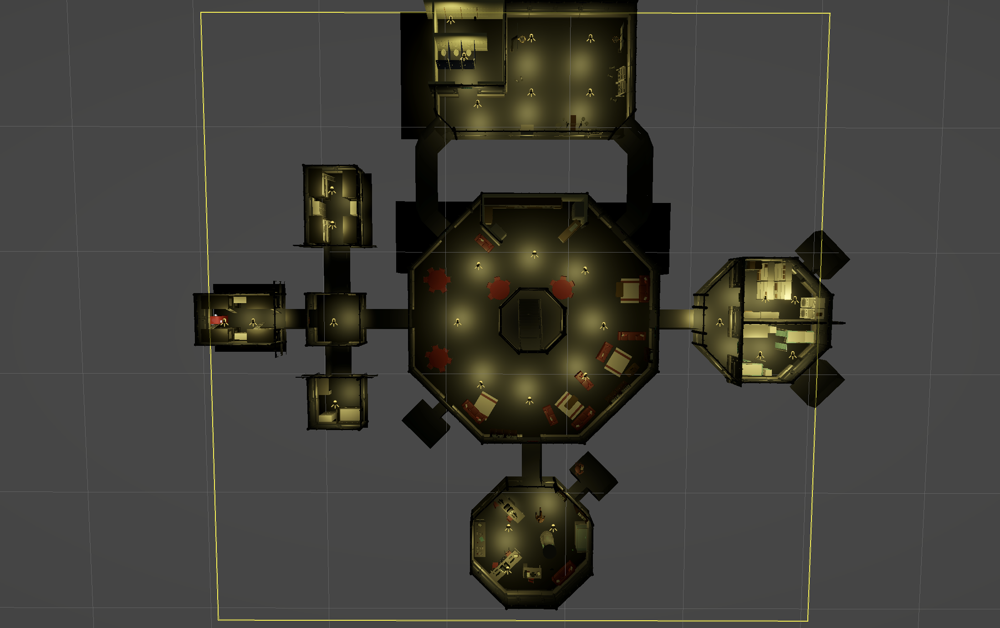
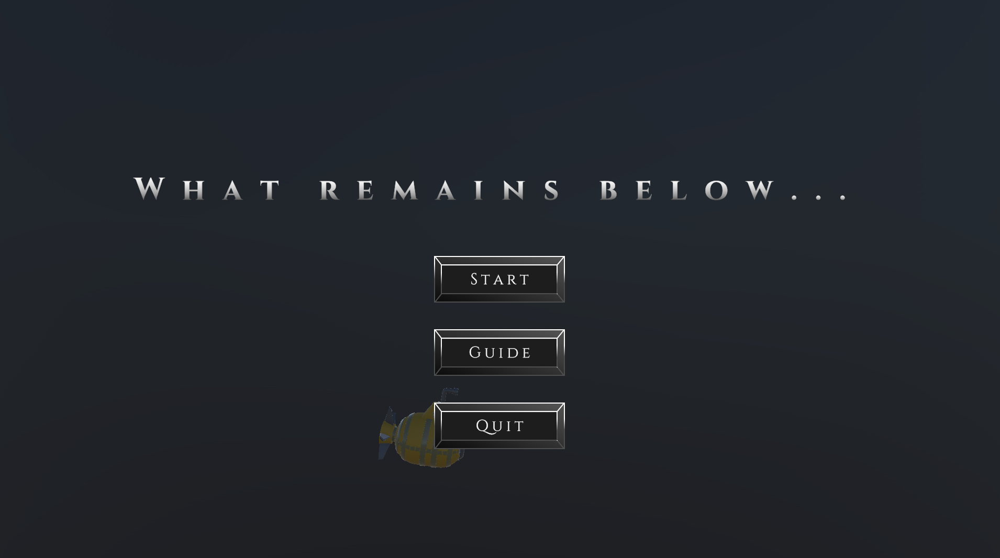
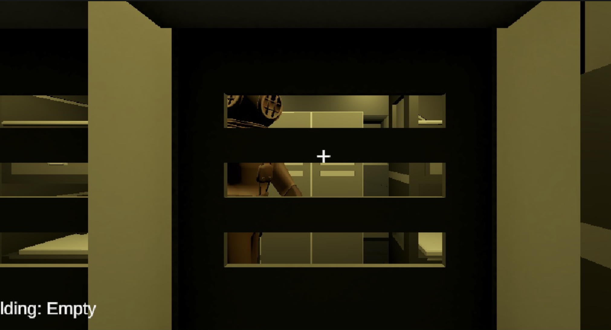
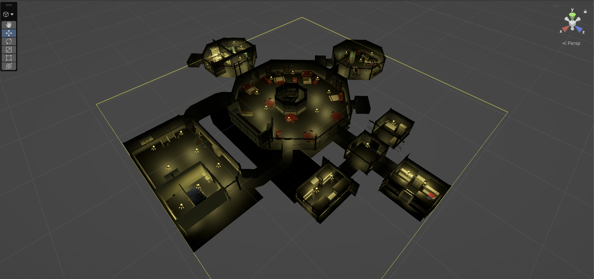
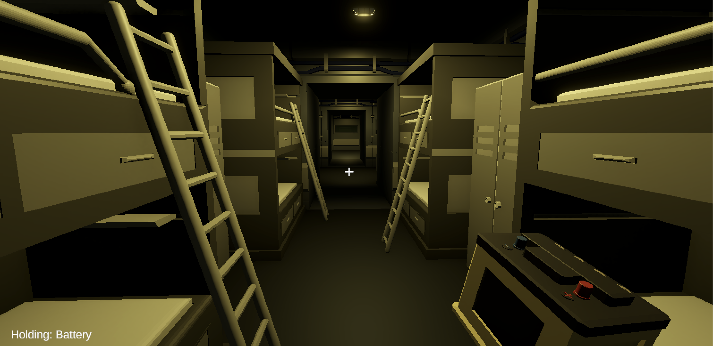
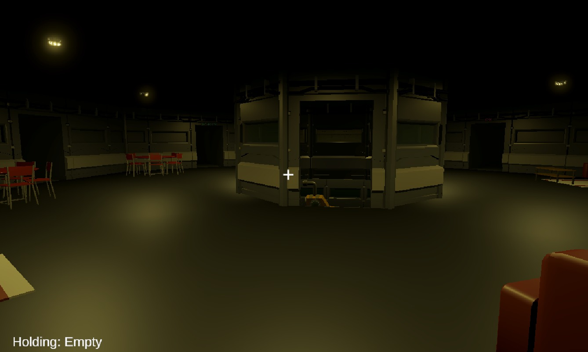
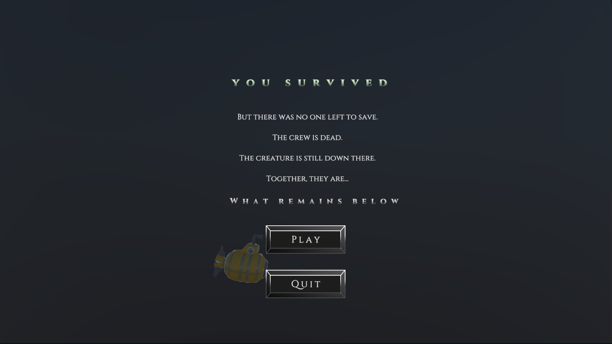

Download from Onedrive
- Open the shared OneDrive build link from the project submission.
- Download the full build folder, not only the .exe file.
- Unzip the folder if Windows downloaded it as an archive.
ePortfolio Group 17
A first-person underwater horror escape game where the player explores the base, manages one held item, avoids a stalking monster, solves NPC puzzles, and repairs the submarine before the third catch becomes fatal.
Instructions
The game can be tested directly in Unity during development or played from a Windows build when one is exported.
Implemented scene flow
The project now switches between the Map scene and the Submarine scene while preserving player items, monster state, dropped objects, and task progress for the current playthrough.

Characters

Roams between points, searches after arrivals, chases on sight, investigates player-dropped items, and kills the player on the third catch.

Guards a note. Without a coin it snaps as a warning; with a coin it lifts its arms, consumes the coin, opens the note collider, and stays bribed.

The aquarium puzzle uses poison to turn the water green, deactivate the fish, and unlock the coin pickup needed for the crab.
Implemented puzzle and repair loop
Items are one-slot pickups with persistent world state. The first distribution is random per new run, filtered by item size so small, medium, and big items only spawn at compatible points.
Aquarium poison: using the poison item turns the aquarium water green, removes the fish, and makes the coin available.
Crab bribe: giving the coin to the crab consumes it, plays the lift-arms animation, disables the blocking collider, and unlocks the note.
Readable note: picking up the note opens a fullscreen text overlay and pauses the game until the player closes it.
Dropped item alert: intentional item drops can alert the monster based on item size and range. Physics impacts and Wwise sounds do not trigger this logic.
Final escape: the final submarine button only loads the Survive scene after all required submarine tasks are complete, with a debug all-done checkbox for testing.
Playable feature checklist
These cards summarize the current implemented views and can be replaced with screenshots from the Unity scenes.

The start screen presents What Remains Below with Start, Guide, and Quit options. Starting a run resets the playthrough state.

Lockers and hiding spots let the player break line of sight while the monster patrols and searches nearby.

Map scene contains randomized item placement, spawn point size filters, lockers, NPC puzzles, and monster navigation.

The one-slot inventory shows the held item, supports pickup/drop persistence, and feeds submarine repair sockets.

The hub connects exploration, submarine access, item routing, and monster movement through the shared map space.

Survive scene loads after final submarine escape; Death scene loads after the third monster catch.
Runtime architecture
The current project uses persistent run state for scene switching, item placement, enemy behavior, submarine tasks, NPC puzzle state, and endings.
Moves through the base, crouches, hides in lockers, carries one item, drops items, repairs the submarine, and triggers endings.
Uses vision, A* paths, roaming waits, search animations, dropped-item investigation, catch-count respawns, and final death logic.
Hosts random item spawn points, size-filtered placement, aquarium and crab puzzles, lockers, and monster navigation.
Have stable item IDs, size categories, held transforms, drop physics settings, persistence, and optional alert radius behavior.
Fish and crab now form a puzzle chain: poison the aquarium, take the coin, bribe the crab, then read the note.
Wwise events handle menu music, ambience, walking loops, breathing, death, lockers, and item drop audio. Enemy alerts remain gameplay-only.
The enemy uses a grid-based A* pathfinder with a custom path follower. It can roam, chase, search, investigate dropped item alerts, and save its state before scene unloads.
Implemented classes
GameState coordinates run resets, held item restore, scene item persistence, random spawn state, crab/aquarium state, enemy state, and the three-catch rule.
PlayerInteraction raycasts to IInteractable objects. InventorySlot manages the held item, drops, item persistence, and dropped-item monster alerts.
MonsterAI reads vision and alert events, requests paths, changes animation phases, handles catch respawns, and falls back to roaming after searches.